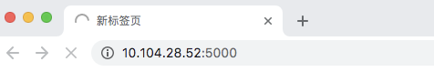

Hello, how to setup a refresh schedule for each of the queries？
If Redash has api to refresh query or dashboard?
This site is in read only mode. Please continue to browse, but replying, likes,
and other actions are disabled for now.
You can use the API to add schedules, assuming the dashboard has no parameters. Or trigger a cron job using one of the examples in our docs:
Ok! Thank you very much!
Meanwhile, I want to know how to download plot as a png to local host throgh api?
It’s complicated. Each visualization has a camera button to download its PNG:
But the image is actually generated in the front-end by your browser. So there’s no back-end API for it.
However, from our docs:
For SaaS customers, there is also a hardlink to a PNG of your visualization hosted through
snap.redash.io. The PNG embed is especially useful in contexts where iframes won’t work (like GitHub issues).
We open-sourced the snap service on Github. So you can run that on your own infrastructure if you need.
Thanks very much!
My redash is self hosted. When I use selenium+ headless chrome to click camera button，some time the redash port can’t access all along and I must to restart redash.
The redash log are follows:
{kind=link}

Your log looks ok. And your Selenium idea approximates our snap repository too.
It’s not clear what the issue is. Does Redash run normally? Does it work when you visit from your browser?